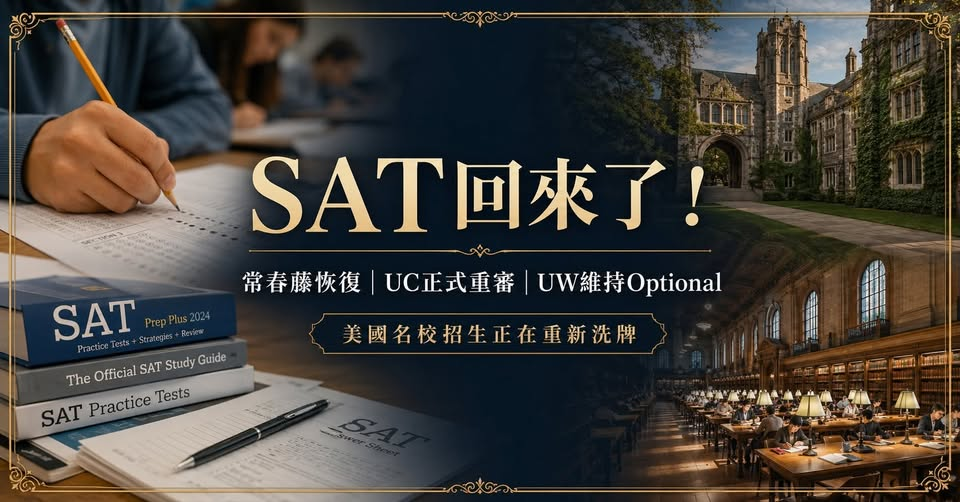

《看懂制度，選對世界》第一集
SAT 真的回來了：美國名校招生正在重新洗牌
美國大學申請，正在發生一個非常重要的變化： SAT／ACT，回來了。疫情之後，美國大學曾經大規模採用 Test-Optional，但到了 2026 年，情況正在快速改變。

【 SAT真的回來了！常春藤率先恢復，下一個會是UC嗎？美國名校招生正在重新洗牌】 美國大學申請，正在發生一個非常重要的變化： SAT／ACT，回來了。疫情之後，美國大學曾經大規模採用 Test-Optional，但到了 2026 年，情況正在快速改變。Harvard、Yale、Brown、Dartmouth、Cornell、University of Pennsylvania 等頂尖大學，都已經重新要求 SAT／ACT。
Princeton 與 Columbia 也已宣布： 申請 2028 Fall 入學開始，恢復 SAT／ACT 要求。也就是說，常春藤盟校正在全面走回標準化考試。但是—— 事情最值得注意的地方，其實還不只 Ivy League。因為現在連 University of California 加州大學系統，也開始重新檢討 SAT／ACT 政策。
第一派：常春藤——SAT正式回歸 目前包括： Harvard University Yale University Brown University Dartmouth College Cornell University University of Pennsylvania 都已恢復 SAT／ACT 要求。
而： Princeton University Columbia University 目前申請 2027 Fall 仍可 Test-Optional，但兩校都已宣布： 2028 Fall 起恢復標準化考試要求。這是一個非常明顯的訊號： 美國最頂尖的私立大學，重新認為標準化考試具有招生參考價值。第二派：UC目前仍不看SAT，但事情正在改變 截至目前，UC 系統仍然維持 Test-Free。但是，2026 年出現了一個非常重要的新發展。
部分教授認為： 不同高中之間的 GPA 標準差距非常大 學校課程難度不同 評分制度也不同 UC已正式啟動招生政策檢討 2027年2月前後提出研究報告 第三派：University of Washington依然維持Test-Optional 另一所台灣學生非常喜歡的大學： University of Washington, Seattle 目前則沒有跟著常春藤恢復 SAT Requirement。UW 官方目前仍表示： SAT／ACT requirement 已永久取消。也就是學生不必提交 SAT／ACT。
而且一般情況下，招生審查人員甚至不會看到你提交的 SAT／ACT。不過 UW 和 UC 還是有一點差別。如果學生有非常高的 SAT／ACT 成績，例如： SAT 1400+ ACT 31+ 在極少數邊緣招生案例中，UW仍可能把高分納入考慮。現在完全放棄SAT準備，風險就比前幾年高很多。尤其是現在就讀： 國三 高一 高二 未來真正送出美國大學申請時，標準化考試的版圖可能又會出現新的變化。SAT回歸背後，代表的是美國大學招生政策正在重新調整 常春藤已經回來了。UC開始重新檢討了。UW目前仍維持Optional。
下一個恢復 SAT 的頂尖大學，會是誰？未來一兩年的美國大學招生政策，非常值得持續觀察。